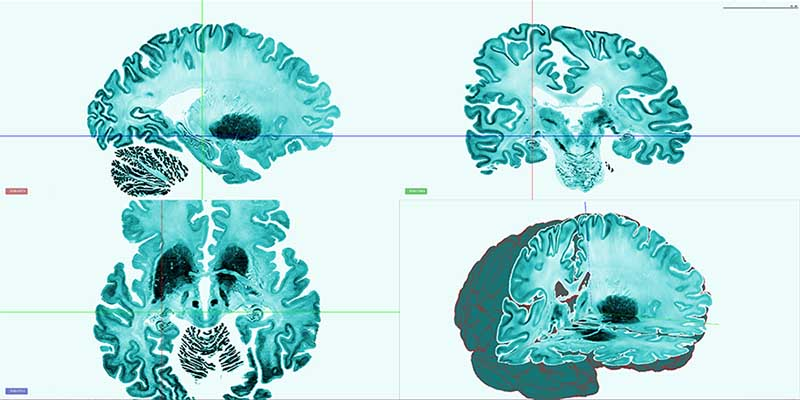
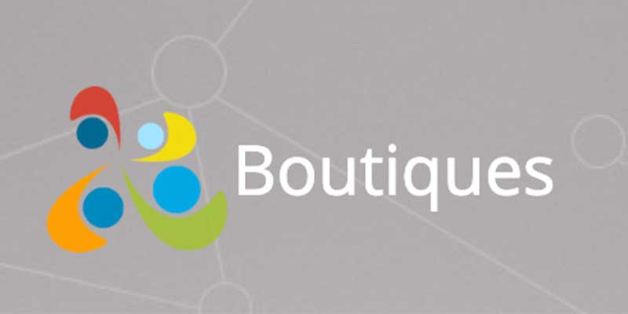
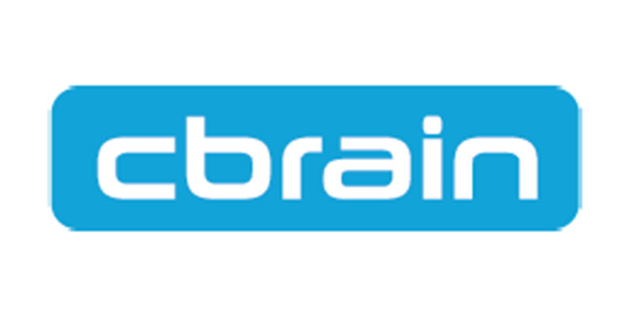
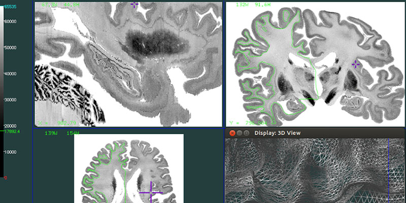
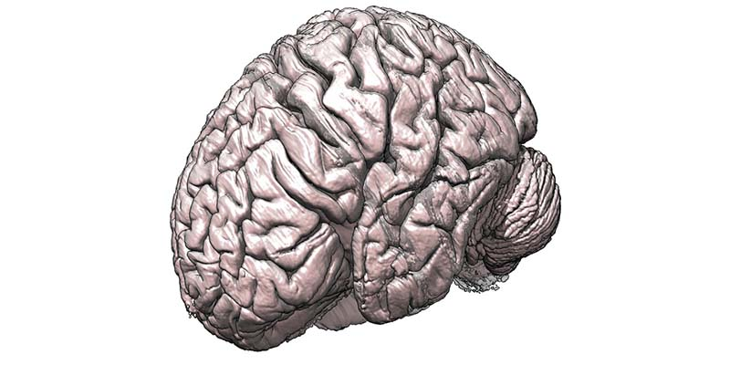

Tools
partner and community developed BigBrain tools

Atelier3D
by: Louis Borgeat, Philippe Massicotte, et al
Atelier3D is a visualisation and annotation tool from NRC Computer Vision and Graphics
Go to website
BrainBrowser
by: Tarek Sherif et al
BrainBrowser is a set of web-based 3D visualization tools primarily used for viewing neurological data, such as MRI scans. The surface viewer was modified by Natacha Beck and Lindsay B Lewis to handle the BigBrain surfaces created by C Lepage, A Altinkaya, and various contributors.
Open in browser

Boutiques
by: Tristan Glatard et al
A cross-platform descriptive command-line framework for applications.
Open in Github

Calcul Québec
Calcul Québec’s supercomputers, located in various universities, are available to researchers from across Quebec and Canada. Our systems total over 80 000 cores in a variety of configurations.
Go to website

CBRAIN
by: CBRAIN team
CBRAIN is an infrastructure that connects researchers and data from all walks of science to high performance and cloud computing in an easy to manage, reproducible, and user-friendly manner.
Go to website

Display
by: David MacDonald et al
Display is designed to visualize and manipulate three dimensional objects, such as human cortical surfaces and sulcal curves.
Go to website
Human Brain Project Tools
by: Various
Tools and visualization applications on the HBP website.
Go to website


Juelich Supercomputing Centre
The Jülich Supercomputing Centre (JSC) at Forschungszentrum Jülich enables scientists and engineers to solve highly complex, grand challenges in science and engineering within collaborative infrastructures for both supercomputing and grid technologies.
Go to website
LORIS
by: LORIS team
(Longitudinal Online Research and Imaging System) is a web-based data and project management software for neuroimaging research studies. It is an OPEN SOURCE framework for storing and processing behavioural, clinical, neuroimaging and genetic data.
Go to website

MicroDraw
by: Roberto Toro et al
MicroDraw is a web application to visualise and annotate collaboratively high resolution histology data.
Go to website

The Human Brain in Chimera
by: Tom Goddard
A tutorial on how to visualize the BigBrain in Chimera using the MINC format.
Go to tool

The Virtual Brain
by: Viktor Jirsa et al
A multiscale integration and simulation platform for brain network computation.
Go to website